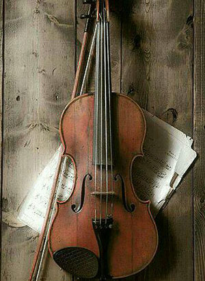

亲爱的小狮子
你是我心中最炽热的那一部分，我比较讨厌这些文案部分，但是只要一想到你，分分钟不用草稿语言就能出来，自己都感到惊讶，明明写作文是我的大弱项。对你想说的话太多了，简言之，郭文莉，我喜欢你。一直以为是肉麻的感情和生疏的文字，居然会因为你而使用，对于我来说，你的魅力是无限的。即便是在最低落的时刻，也会因为你一句安慰的话，整个世界都会瞬间充满了色彩。
虽然我们的聊天多是一些互怼模式，但是我却觉得别有乐趣。和小时候一样，可以抛开现在的虚假角色，以最真诚的心来互相面对，大声的说出对你的感情。而你也显得格外真实，虽然缺点随口一说就有一大堆，但我还是无时无刻的在牵挂着你。生活中的任一个美好的瞬间，我都想着和你分享。有次坐在高铁上，我刚刚醒来，发现下起了雨。雨水打在玻璃上想小蝌蚪一样横向移动，我当时带着困意看着，想拿起手机来拍个小视频给你。但是我们刚刚聊完，不想打扰，想着雨也不会停那么早。过会雨停了，刺眼的阳光出现了，那个瞬间就这样错过了。接下来的路程里我不断自责着，为什么当时不去提前拍个视频，去把握这个机会。
最初的我可能把你对我的热情当成了喜欢，不停的消耗着你对我的感情，想把自己的心往你身上靠。开始时真把你妄想成了自己的女朋友，过分的讨好你，最终得到的是你的冷眼相看。但这个恨不得把身边的每个美好瞬间分享给你的心情一直没变，唯一的不同是自己学会了克制感情。有时你越想得到一些东西，它就越不会到你手里，相反你最看轻的那些东西，却会向你身上靠，时运就是这样捉弄人，算是成长了一些吧。
你说过我喜欢的只是小学时的你，现在变化太多了。每次在我心灰意冷准备放弃时，你都会给我希望，不知是你喜欢这种被爱的感觉，还是可怜我，想施舍给我一份感情。我会抓住它的，只要你不会讨厌我，不会对你造成不便，我都想去爱你。当然这种爱很自私，如果谁敢在我面前抢夺你的话，我会毫不犹豫的把他打飞！！！
我小心翼翼的与你相处着，你就像一只小猫，高兴时就会撒娇，讨厌时看都不会看你一眼。可爱而且高冷，很想看看你能耐得了我的热情到何时。你总是把最坏的结果放在心里，没有安全感，不敢放心大胆的去爱。而我也不敢去表达自己，怕会和你走远。你的心里也犹豫着，明明希望我靠近却拒绝着，我让你看了一张去北京的车票，你有意无意的提醒我去那的火锅店见你的一个双胞胎姐姐，我也清楚，见了她也就相当于见了你的容貌。
我没有思索就同意了，互相拿着一个拍姐姐照片的奇怪理由搪塞着，我承诺当天下午就会搞到照片。但是不如人意，只能在晚上才有自由时间，整个下午都在叨念着去鸟巢。在去的路途中，你却执意要我不要去见你姐姐，你每次都是这么复杂。想听你的话，不去，换来的是你的不理睬。我想要去相信你，你盼望着我主动，盼望着我想和你走的更近。我想给你一个惊喜，等到了火锅店再给你发消息，你又给我一个惊喜，因为你好像猜到了我会来这个地方。
小狮子，你总是在含蓄着表达自己的想法。当听到你想为了我而改变的时候，之前对你的猜疑和对未来的不安仿佛一扫而光。此时的你是那么可爱，有时我会幻想着和你牵手，和你亲吻的画面，带着你去逛迪士尼，在坐过山车时和你紧紧相抱。想自驾旅游，一个人的话肯定会很孤独，那时候就我们两个，开车去任何想去的地方，带着你去世界各地，直到你说累为止，我一定会让你满足的。想要拿起小提琴，♩ ♪ ♫ ♬，随时随地演奏给你最喜欢听的音乐，虽然我只有一点点音乐基础，虽然经常自暴自弃，但是想努力一次……在婚礼上演奏一曲是我的一个梦想，我想在求婚时让你看到我的小提琴独奏。我喜欢这样，为了喜欢的人而想着去改变自己，想让自己变得更加美好。我向往的爱情带来的是这种激励，而不是互相堕落，这样对每个人来说都是一件舒服的事情。引录：
more